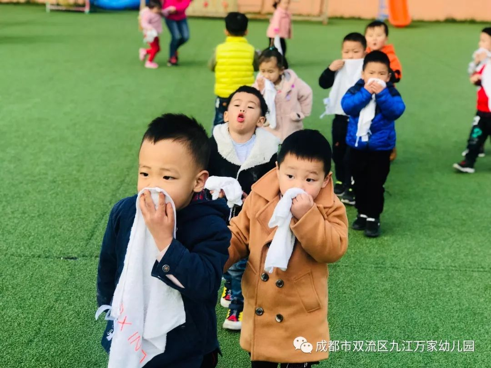
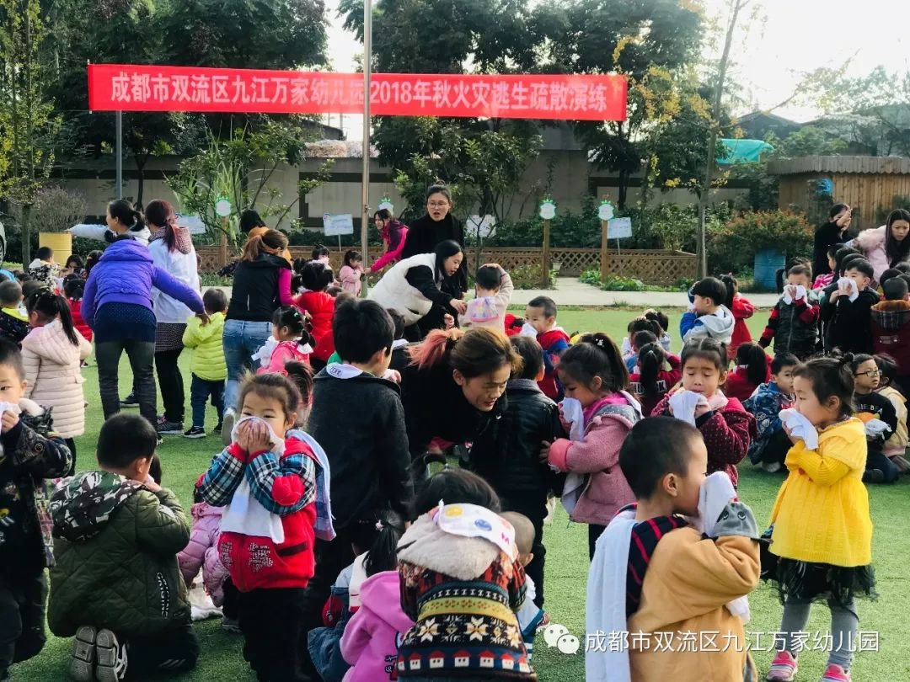

成都市双流区九江万家幼儿园 2018-11-14 11:36 发表于四川
为进一步加强幼儿园安全工作，
增强我园师生的消防安全意识，
了解相关消防小知识和逃生办法，
双流区九江万家幼儿园开展消防演习活动。
考验老师与孩子们的应急反应能力
演练正式开始！
﹋ ﹋ ﹋ ﹋ ﹋ ﹋ ﹋ ﹋ ﹋ ﹋ ﹋ ﹋ ﹋ ﹋
孩子们像平常一样在上课、游戏
▼
\( o )/
……………………………………
突然！
diu…diu……diu……diu………！
诶？！ 什么声音～？！
请注意，警报拉响啦
~~快~~跑~~啊~~！~~~~！
孩子们在老师的带领下，快速的用湿毛巾捂住口鼻，跟随老师撤离活动室。
………………………………………………
逃离至安全的地方
▼
………………………………………………
危险解除，清点人数
▼
………………………………………………
接下来，教职工学习、使用灭火器
1、拔掉保险销
2、握着喷管
3、对
着着火点
………………………………
………………………………
通过这次演练，幼儿的防火意识和自我保护能力都得到大大的提高，懂得了火灾发生时要如何逃生、如何自救，学会遇事不慌张不害怕。在以后的教学中，我们的老师也将进一步将安全教育渗透日常教学中，为孩子们的健康快乐成长创造安全的环境。
阅读 343
分享 收藏
18 在看




